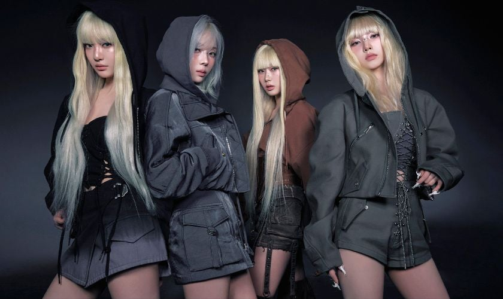

About Me
Lord Alfred T. Mungcal is a college student at Technological University of the Philippines. He is currently on his 3rd year pursuing Bachelor of Science in Information Systems. Lord desires to graduate and become a skilled IT professional. He also aspires to be a millionare.
Hobbies
Playing Guitar
Playing guitar became my hobby because i whenever i'm alone, i play guitar and it makes me happy when i hear the sounds that i make.
Reading
Reading is one of my hobby. Wherever i go, i read manhwa/manga. Whenever i have free time, i read. I love reading.
Watching
I like to watch movies, series, animes, and many more. I really like watching because i find it entertaining and even though it can take so much time, i love it.
Interests
Instruments
Lately, i became interested in playing instruments, and i really like to play a lot of instruments.

KPOP
While doing this website, i'm listening to KPOP. I'm currently interested in listening to KPOP songs because they are lively and i love them.
Table Tennis
I played table tennis durin my highschool days. As of now, i am interested in playing again because i'm quite good at it.